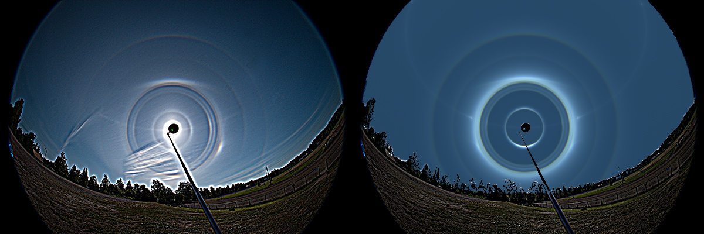

This is an example of the challenges that halo dsiplays in the sky pose to the simulator. To correctly capture the halo forms, their respective intensities, and the right degree of blurriness, one needs more than a single population of ice crystals. It would be tempting, and perhaps physically correct, to try to cope with as few ice crystal populations as possible — but in this case four different ice crystal populations were needed.
Two of the four populations have pyramidal ends and two are ordinary prisms with plate- and random orientations. One of the pyramidal populations is randomly oriented, the other is a poorly oriented plate population. It is difficult to make the 23° plate arc as diffuse as it appears in the photograph. The 24° lower plate arc is quite strong, but no more than a patch of light. Striking a balance between brightness and shape takes a fair amount of tilt, along with adjustments to the crystal face areas — tuned by tweaking the hexagonal cross-sections and the pyramid heights.
The simulation is a decent, but by no means a perfect match with the photo. For example, the weak brightenings on the sides of the 9° and 20° halos have not been addressed in the simulation. What kind of a population is still missing?
On the left is the unsharp-masked photo, on the right the simulation. The ice crystals in the high clouds are not evenly distributed, and some of the brightness variation comes from this. For the most part, though, it is the shapes and proportions of the different ice crystal types that govern the respective brightnesses and forms of the halos — and that is the clue one tries to use to get the ice crystals right in the simulation.
